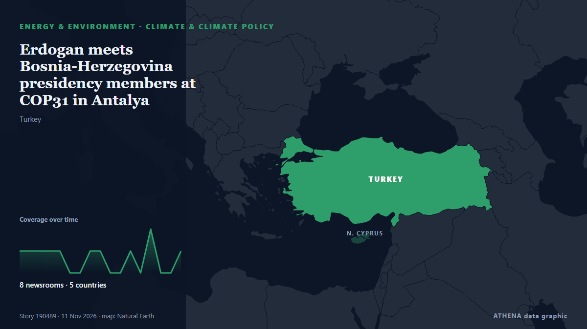

Énergie, ressources et environnement
SponsoriséPrésenté par  Cybernetics and Artificial Intelligence Lab Welcome to the Cybernetics and Artificial Intelligence Laboratory, established at the Department of Business Administration of the National and Kapodistrian University of Athens. The lab is headed by Professor Dimitrios Thomakos. The lab aims to do research that can be published in top venues. Our research uses tools and methods of Artificial Intelligence, and lies in the following areas: - Forecasting - Decision making - Cyber security - Finance We are always looking forward to collaborating with exceptional students!
Cybernetics and Artificial Intelligence Lab Welcome to the Cybernetics and Artificial Intelligence Laboratory, established at the Department of Business Administration of the National and Kapodistrian University of Athens. The lab is headed by Professor Dimitrios Thomakos. The lab aims to do research that can be published in top venues. Our research uses tools and methods of Artificial Intelligence, and lies in the following areas: - Forecasting - Decision making - Cyber security - Finance We are always looking forward to collaborating with exceptional students!
Les titres sont affichés en anglais, tels que publiés.

Climat et politique climatiqueErdogan meets Bosnia-Herzegovina presidency members at COP31 in Antalya
In the evening, Tarique Rahman will attend a dinner hosted by Turkish President Recep Tayyip Erdogan in honour of world leaders attending the summit. de The Business Standard (Bangladesh) (working feed)
| 30 oct. | 94 |
|---|---|
| 31 oct. | 39 |
| 1 nov. | 55 |
| 2 nov. | 121 |
| 3 nov. | 93 |
| 4 nov. | 99 |
| 5 nov. | 96 |
| 6 nov. | 60 |
| 7 nov. | 47 |
| 8 nov. | 56 |
| 9 nov. | 105 |
| 10 nov. | 88 |
| 11 nov. | 59 |
| 12 nov. | 0 |
Government, parliament launch separate probes into Jurf al-Sakhr smuggling
Shafaq News- Baghdad (Updated at 19:30) Iraq's government and parliament have each moved to investigate reports of oil smuggling in Jurf al-Sakhr (Jurf al-Nasr), forming separate committees days… de Shafaq News (English)
‘Climate crisis is outrunning us,’ UN chief Guterres says at COP31
Guterres says the world must fight harder, accuses the fossil fuel lobby of delaying climate action at critical talks. de Al Jazeera English
Erdogan condemns Gaza 'ecocide' at Cop31 climate summit in Turkey
Turkish President Recep Tayyip Erdoğan has expressed appreciation to Azerbaijan for sharing its experience in hosting COP29, highlighting Baku's contribution to the organisation of the 31st United… de AzerNews
Gas prices fall below $4 per gallon for the first time since July
The national average for the cost of gas dropped to less than $4 per gallon on Tuesday for the first time since July, as prices soared in the months following the start of the Iran war. de The Hill
Portugal on alert as Storm Charles heads towards the mainland
Mainland Portugal is under a state of alert today, Wednesday, 11 November, as Storm Charles moves towards the country after bringing strong winds to Madeira. de The Portugal News
Planet One opens new exploration frontier with offshore Ghana hydrocarbon discovery
Planet One Oil & Gas has announced the discovery of hydrocarbons at its Nya Gyidie-1X exploration well in the Deepwater Cape Three Points (DWCTP) Block offshore Ghana. de MyJoyOnline
ADNOC widens its Asian footprint with decade-long LNG offtake deal
French energy giant TotalEnergies has signed a heads of agreement with Jiangsu Guoxin Group, a major energy company in China's Jiangsu province, to deliver 900,000 tons of LNG per year. de LNG Prime
NAHCON, Saudi Arabia sign 2027 Hajj agreement
The fourth conference of the Working Group of the Defence and Security Committee of the Greece–Saudi Arabia Supreme Council for Strategic Cooperation has been successfully concluded. de Naftemporiki (English)
Delhi air quality deteriorates, AQI settles at 303
New Delhi: Delhi's air quality worsened to 'very poor' on Wednesday, with the AQI settling at 303, the Central Pollution Control Board (CPCB) data showed. de Deccan Herald
El Niño looms over Colombia's battle with fire-prone plant
Colombian farmer Albert Montano razes a beautiful thorny shrub, fearful that its yellow flowers will fuel potent wildfires expected during the El Niño weather pattern. de Phys.org
Web Summit Cancels Day Two As Storm Charles Hits Lisbon
Storm Charles has put paid to day two of Web Summit in Lisbon, Portugal. de Deadline
ExxonMobil Takes First Step Toward Venezuela Oil Return
ExxonMobil said on Monday it signed a memorandum of understanding with Venezuelan state oil company PDVSA to assess upstream oil opportunities, marking a potential return to the country nearly two… de MarineLink
Oil prices are so high that CO2 emissions from fossil fuels are dropping
It's not quite a victory for humanity's transition to renewables. de Science News
Greta Thunberg arrives at UN climate talks saying ‘everything we love is at stake’
Greta Thunberg has arrived at the U.N. climate meeting in Turkey, emphasizing the need to prioritize people and the planet over profits. de The Independent
UNICEF says Israel blocks Gaza basin repairs, warns of flood risk
GENEVA: The UN children's agency said Israel had rejected the importation of equipment needed to repair a water basin in Gaza, and warned that the facility could overflow and endan... de Oman Observer
Oil rises from two-month low as Hormuz shipping attacks offset Iran truce hopes
BEIJING: Oil prices rose on Wednesday after falling to two-month lows in the previous session, as the market swung between hopes for a de-escalation in the Iran war and concerns about ongoing… de Business Recorder
Brent Crude Falls Below $90 for First Time Since August
Brent Crude prices plunged to below $90 per barrel early on Tuesday, falling below that threshold for the first time since August, as U.S. de OilPrice.com
Ukrainian strikes cut Russia's oil refining capacity by 30%, Reuters reports
Over the past week, Ukrainian attacks disrupted operations or caused emergency situations at nine of Russia's 35 major refineries, according to Reuters. de Kyiv Independent
Oil Price Falls Below $90 First Time in 4 Months as Trump Signals Iran De-escalation
• Development portends mixed fortunes for Nigeria Emmanuel Addeh in Abuja Nigeria’s crude benchmark, Brent, fell below the $90 per barrel threshold yesterday for the first time since August, as. de ThisDay (Nigeria)
Iran urges UN, IAEA to condemn US offer of $20M for nuclear information
Foreign minister warns US initiative could encourage espionage, endanger nuclear scientists and undermine IAEA safeguards. de Anadolu Agency (English)
Greek inflation accelerates to 5.7% in October as natural gas prices surge 80%
Inflation in Greece rose to 5.7% in October, driven by sharp increases in energy, housing and transport costs. de ProtoThema English
Saudi Arabia says East-West oil pipeline targeted in Medina, operations unaffected
RIYADH: The East-West pipeline in the Madinah region was targeted on Monday and the incident resulted in a limited fire which emergency teams extinguished, Saudi Arabia’s energy ministry reported. de Arab News
Bureau Veritas upgrades VeriSTAR Green emissions platform
Bureau Veritas Marine & Offshore has launched an upgraded version of its VeriSTAR Green platform. de Container News
Oil Prices Plunge Below $92 as Trump Signals Restraint on Iran
Crude oil prices dropped to less than $92 per barrel for Brent and $86 for WTI following reports citing President Trump as not planning to attack Iran “at this point”. de OilPrice.com
‘We woke up soaking wet’: Gaza’s displaced face another winter of floods and collapsed shelters
Tens of thousands of makeshift shelters have been flooded, leaving families without dry bedding or protection from the cold as emergency crews struggle to cope with the worsening conditions. de TRT World
Israel too slow as floods ravage Gaza, says Trump 'Board of Peace'
TEL AVIV: President Donald Trump’s “Board of Peace” said Monday that Israel needed to act immediately to help war-battered Gaza cope with impending winter, saying measures ahead of deadly floods had… de New Straits Times
Drones strike Russia’s second-largest oil refinery
A fire broke out at the Kirishi Oil Refinery (KINEF) in Russia’s Leningrad region following a drone attack overnight on November 9. de Ukrinform (English)
Türkiye reveals two new oil fields as COP31 opens in Antalya
Türkiye will use music, dance and art to bring its climate message to a global audience during the U.N. de Daily Sabah
COP31 opens in Türkiye with calls to turn climate pledges into action
The world is on track to miss climate targets, and governments are grappling with the consequences of climate change. de Council on Foreign Relations
Fog leads to air pollution alert and weather warnings
Visibility was reduced to less than 100m in some places overnight. de Evening Standard (London)
Oil falls over US$7 as Trump signals restraint on Iran
LONDON: Brent crude futures continued tumbling after settlement on Monday, losing more than US$7 a barrel to hit their lowest level since late August, after US President Donald Trump downplayed the… de New Straits Times
Greece-Cyprus power cable: No permission sought from Turkey as survey permits and NAVTEX issued, Marinakis says
The government has completed the licensing process and issued a NAVTEX for the Greece-Cyprus electricity interconnector, with the government spokesman insisting that neither Athens nor Nicosia has… de ProtoThema English
Rosneft introduces fuel sale limits at filling stations across Russia
30-liter city and 50-liter highway limits reported at Rosneft stations amid refinery disruptions. de Anadolu Agency (English)
World entering ‘age of climate extremes’, says UN chief
Antonio Guterres urged leaders at the COP31 climate conference in Turkey to 'get serious'. de Free Malaysia Today